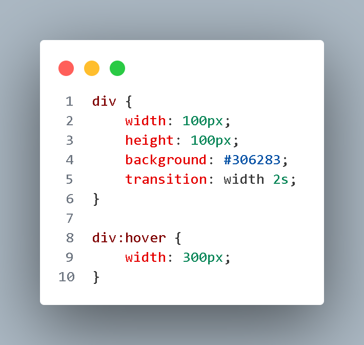

CSS transitions provide a way to control animation speed when changing CSS
properties.
Instead of having
property changes take effect immediately, you can cause the changes in a property to take place over a period of
time. For example, if you change the color of an element from white to black, usually the change is
instantaneous. With CSS transitions enabled, changes occur at time intervals that follow an acceleration curve.
How can you use CSS transitions?
To use CSS transitions, you must specify two things: the CSS property you want to add an effect
to and the
duration of the effect. If the duration part is not specified, the transition will have no effect because its
default value is 0.
Here's an example that shows a `div` element with a transition on its `width` property:

Example:
This code specifies that when a user hovers over the `div` element, its `width` property will transition from
`100px` to `300px` over a period of `2s` (2 seconds).